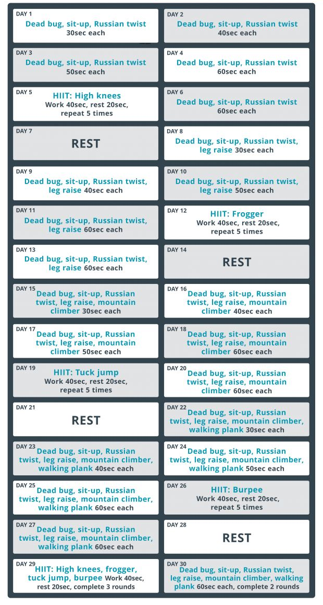

Keeping yourself in good shape is a lifelong endeavour, which is why it’s important to find an activity you love so sticking with it becomes easy. However, while maintaining your long-term health and fitness requires a consistent approach to training and some achievable goals you can tick off along the way, there’s still a place for short-term challenges. You’ll be amazed at what you can achieve in just 30 days, and completing a challenge like the one below might even be the motivational boost you need to spark a longer-term commitment to looking after your fitness.
Before we get to the long term, however, let’s consider the next 30 days, which are all planned out for you. This challenge is designed by Taofique Folarin (who was a trainer at boutique gym Sweat It London when he set it), who has created a month of workouts that are sure to sculpt a more defined set of abs as well as increasing your core strength. You might not finish the 30 days ready to show off a perfect six-pack, but you’ll find that your posture and mobility have improved, and that you have more power in the tank when playing sport or lifting weights.
Over the 30 days you’ll have just four days of rest, with all other days involving core exercises or a HIIT workout. You’ll find all the info you need to complete the plan below, and because your life might feel like it’s missing something once the challenge ends, we have recommended more great abs workouts further down the page to help fill the void.
“This challenge not only targets all parts of the abdominals but also works your core endurance,” says Folarin. “It builds in intensity, allowing you to notice your improvements every day, until you have mastered each exercise by day 30.”
The workouts use only bodyweight exercises so you can do them anywhere and any time you have a spare moment, making it easier to stick to the plan whatever life throws at you. Even better, the exercises are suitable for all fitness levels.
Pin or print the 30-day abs challenge, or keep scrolling to find it written out as well as form guides for each exercise.
Day 1 Exercises Dead bug, sit-up, Russian twist Time 30sec each
Day 2 Exercises Dead bug, sit-up, Russian twist Time 40sec each
Day 3 Exercises Dead bug, sit-up, Russian twist Time 50sec each
Day 4 Exercises Dead bug, sit-up, Russian twist Time 60sec each
Day 5 Exercise High knees Sets 5 Time 40sec Rest 20sec
Day 6 Exercises Dead bug, sit-up, Russian twist Time 60sec each
Day 7 Rest
Day 8 Exercises Dead bug, sit-up, Russian twist, leg raise Time 30sec each
Day 9 Exercises Dead bug, sit-up, Russian twist, leg raise Time 40sec each
Day 10 Exercises Dead bug, sit-up, Russian twist, leg raise Time 50sec each
Day 11 Exercises Dead bug, sit-up, Russian twist, leg raise Time 60sec each
Day 12 Exercise Frogger Sets 5 Time 40sec Rest 20sec
Day 13 Exercises Dead bug, sit-up, Russian twist, leg raise Time 60sec each
Day 14 Rest
Day 15 Exercises Dead bug, sit-up, Russian twist, leg raise, mountain climbers Time 30sec each
Day 16 Exercises Dead bug, sit-up, Russian twist, leg raise, mountain climbers Time 40sec each
Day 17 Exercises Dead bug, sit-up, Russian twist, leg raise, mountain climbers Time 50sec each
Day 18 Exercises Dead bug, sit-up, Russian twist, leg raise, mountain climbers Time 60sec each
Day 19 Exercise Tuck jump Sets 5 Time 40sec Rest 20sec
Day 20 Exercises Dead bug, sit-up, Russian twist, leg raise, mountain climbers Time 60sec each
Day 21 Rest
Day 22 Exercises Dead bug, sit-up, Russian twist, leg raise, mountain climbers, walking plank Time 30sec each
Day 23 Exercises Dead bug, sit-up, Russian twist, leg raise, mountain climbers, walking plank Time 40sec each
Day 24 Exercises Dead bug, sit-up, Russian twist, leg raise, mountain climbers, walking plank Time 50sec each
Day 25 Exercises Dead bug, sit-up, Russian twist, leg raise, mountain climbers, walking plank Time 60sec each
Day 26 Exercise Burpee Sets 5 Time 40sec Rest 20sec
Day 27 Exercises Dead bug, sit-up, Russian twist, leg raise, mountain climbers, walking plank Time 60sec each
Day 28 Rest
Day 29 Exercises High knees, frogger, tuck jump, burpee Rounds 3 Time 40sec Rest 20sec
Day 30 Exercises Dead bug, sit-up, Russian twist, leg raise, mountain climbers, walking plank Rounds 2 Time 60sec each

Lie on your back with your arms extended towards the ceiling and your legs raised with your knees bent at a 90° angle. Simultaneously lower your right leg, straightening it as you do, and left arm towards the ground, until they are just above the floor, then bring them back up and repeat with the opposite limbs.

Lie on your back with your legs bent at the knees and your feet on the floor. Use your core muscles to lift your torso off the ground until it is vertical, then lower back to the start.

Sit on the floor with your legs bent at the knees and feet held just above the ground. Lean back so your upper body is at a 45° angle to the floor. Link your hands together in front of your chest then twist your torso from side to side.

Lie on your back. Keeping your legs as straight as you can, raise them until the soles of your feet are facing the ceiling. Lower slowly back to the start.

From a press-up position, bring one knee up to your chest at pace, then the other. Continue, alternating knees.
From a plank position supported by your forearms, move one hand at a time to get up into a press-up position, then drop back onto your forearms one arm at a time.
Run on the spot, bringing your knees as close to your chest as possible.
From a press-up position jump both legs forwards so that your feet land outside your hands. Then jump your feet back to the starting position.
From standing, jump as high as you can, lifting your knees towards your chest. Land softly and go straight into another jump.
From standing, drop into a press-up position (and do a press-up, if you like), then jump your feet back to your hands, stand up and leap straight up. Land softly and repeat.
This trio of circuit workouts cover every part of your abs and are the perfect way to progress your core training if you finish the 30-day challenge desperate for more. You can do the upper abs and obliques workouts without any equipment, but you will need a pull-up bar for the lower abs circuit.
This trio of circuit workouts cover every part of your abs and are the perfect way to progress your core training if you finish the 30-day challenge desperate for more. You can do the upper abs and obliques workouts without any equipment, but you will need a pull-up bar for the lower abs circuit.
If you have a single dumbbell to hand, put it to good use with this quick and effective core workout. You’ll be doing six circuits of five moves, resting only at the end of each round to keep your core muscles working hard for a sustained period.
If you have aspirations to carve out a six-pack it’s vital that you spend time focusing on the lower abs or you’ll end up with a beautifully defined four-pack. This tough session uses a mix of hanging exercises (you can use gym rings or a pull-up bar) and floor moves to put your lower abs to work.